{kind=link}
LuxuryLovers - Site Vitrine - Découvrir...
Quelques projets personnels...


Manhattan City - Authentification - Découvrir...

Electronic Arts - Refonte de site - Découvrir...

Nom du site - Type du site - Découvrir...

Nom du site - Type du site - Découvrir...
LuxuryLovers - Site Vitrine - Découvrir...
MONOPOLY - Jeu dévloppé en C# - Découvrir...
Manhattan City - Authentification - Découvrir...
Electronic Arts - Refonte de site - Découvrir...
Nom du site - Type du site - Découvrir...
Projets académiques...
Installation et configuration d'un serveur LAMP
Développement d'un site en html5/css3
MISE A NIVEAU D'UN SITE DYNAMIQUE
MISE EN PLACE D’UNE INFRASTRUCTURE TECHNIQUE
Gestion de parc informatique
Gestion des incidents
Migration et tests
CRÉATION D'UNE INTERFACE DE GESTION POUR L'ENTREPRISE OCÉANE
RECONSTRUCTION D'UN SITE EN ARCHITECTURE MVC
APPLICATION WEB (PHP) D'UNE MEDIATEQUE
APPLICATION C# DE GESTION D'UNE MEDIATEQUE
Mes stages :
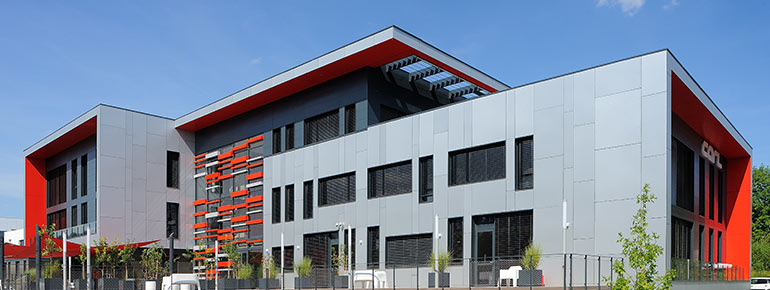
Stage de première année - Berger-Levrault
Sous la direction de Philippe Luciani, j'ai développé une application en ASP.NET Core visant à convertir des fichiers HL7ORU en XML, tout en récupérant des fichiers PDF. J'ai travaillé de manière autonome sur ce projet, mettant en pratique mes compétences en développement logiciel et en résolution de problèmes.
Stage de deuxième année - Berger-Levrault
Au sein de l'équipe Berger-Levrault, j'ai travaillé sur BL.Résident, un système de facturation pour les maisons de retraite, intégré à BL.Sénior avec BL.Soins et BL.Planning. Mon rôle principal était le support utilisateur, incluant la résolution des problèmes et la contribution à l'évolution du logiciel.
MOOC de la CNIL - Protection des Données Personnelles
Le MOOC de la CNIL sensibilise sur la protection des données, fournissant une compréhension approfondie des principes de vie privée et de sécurité des données, développé par la Commission nationale de l'informatique et des libertés.
Objectifs
- Compréhension des Fondamentaux
- Responsabilités des Acteurs
- Législation et Réglementation
- Gestion des Risques
- Sécurité des Données
- Droits des Individus
- Conformité et Bonnes Pratiques
- Gestion des Incidents
- Privacy by Design et by Default
Ce que cette certification m'a apprise
Les principes fondamentaux de la protection des données personnelles, notamment en ce qui concerne la collecte, le traitement et la conservation des informations privées
Les enjeux liés à la vie privée et à la sécurité des données
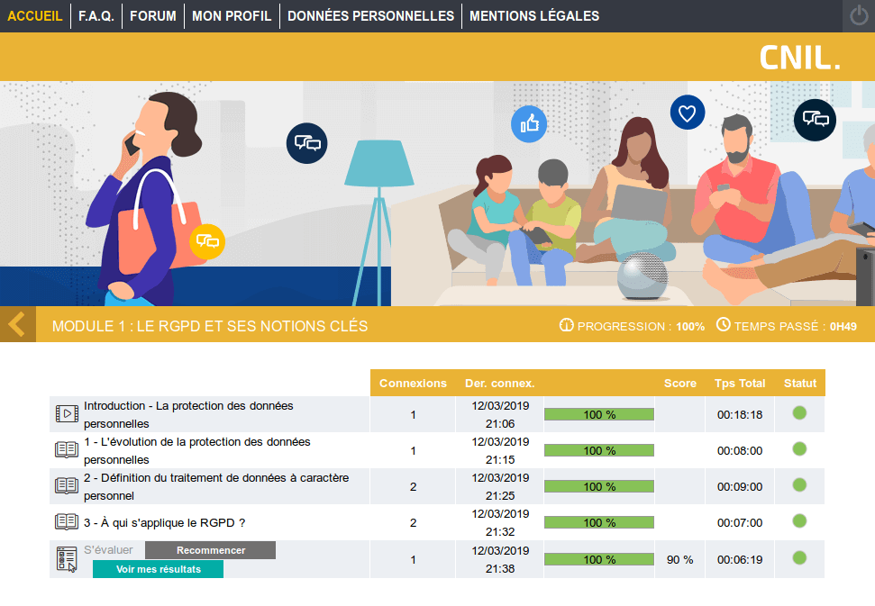 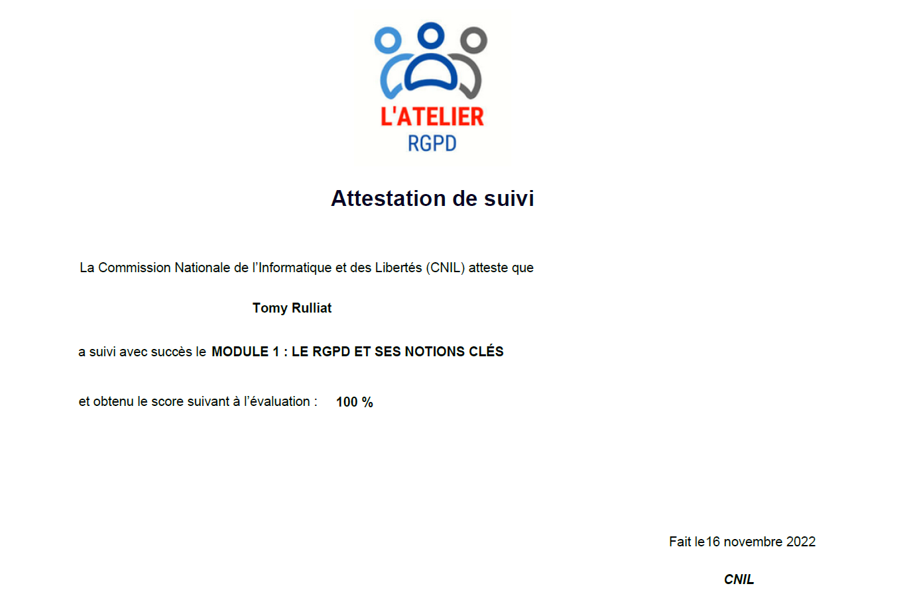 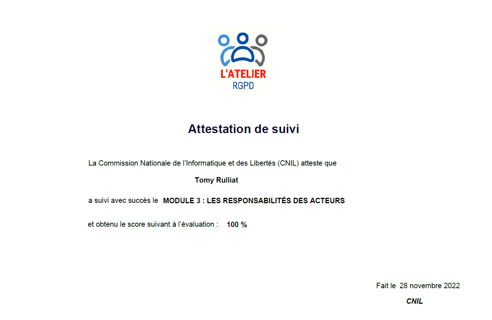
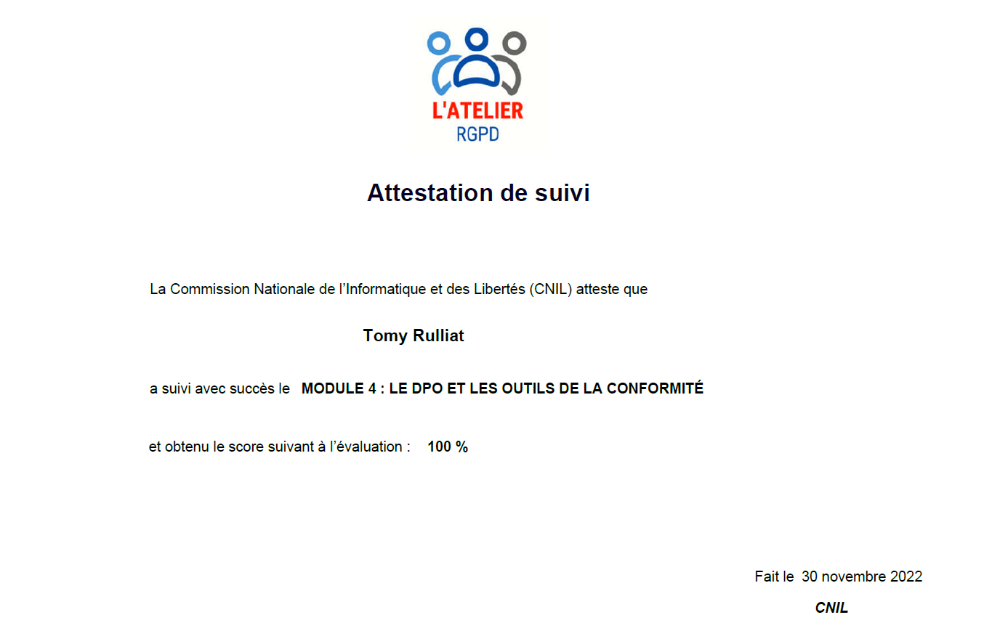
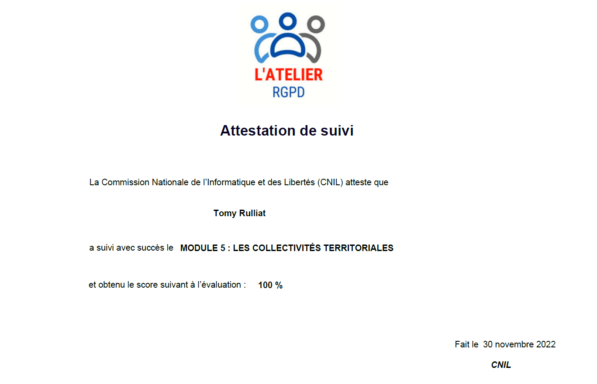
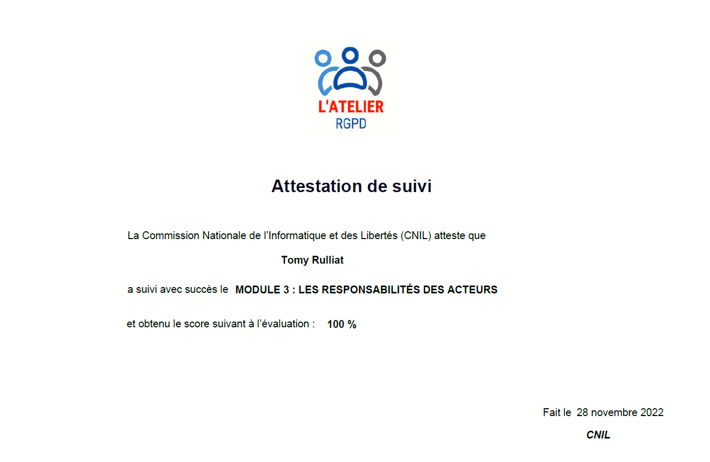
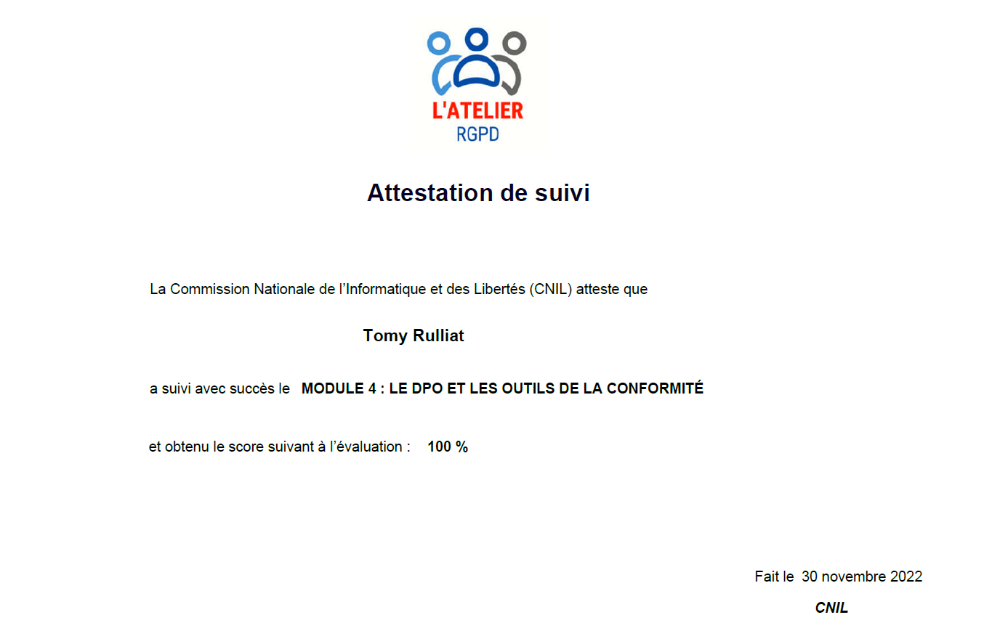
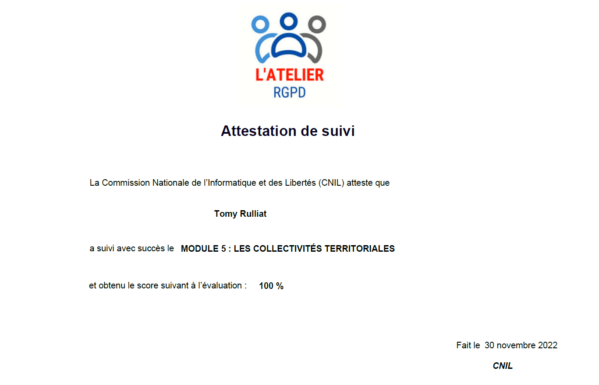
Apprenez à programmer avec JavaScript
Le MOOC "Apprenez à programmer avec JavaScript" d'OpenClassrooms est une formation en ligne interactive visant à initier les apprenants au langage de programmation JavaScript. À travers des leçons structurées, des exercices pratiques et des projets concrets, ce cours offre une approche pratique pour développer des compétences en programmation web.
Objectifs
Les objectifs principaux de ce MOOC sont d'introduire les participants aux bases du langage JavaScript, de les familiariser avec les concepts fondamentaux de la programmation, et de les guider dans la création d'applications web interactives. Le cours vise à rendre les apprenants autonomes dans le développement web en utilisant JavaScript.
Ce que cette certification m'a apprise
- Les bases du langage de programmation JavaScript.
- Les concepts fondamentaux de la programmation informatique.
- La création d'applications web interactives.
- L'autonomie dans le développement web en utilisant JavaScript.
- La rédaction de code JavaScript fonctionnel.
- L'amélioration de ma logique de programmation.
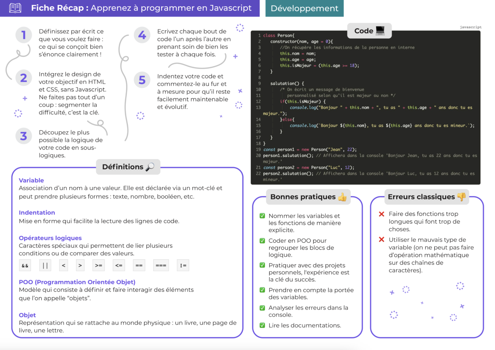 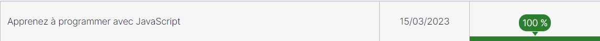
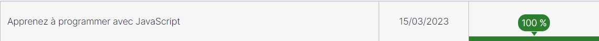
Gérez votre parc informatique avec GLPI
Le MOOC "Gérez votre parc informatique avec GLPI" d'OpenClassrooms est une formation en ligne interactive conçue pour enseigner aux professionnels de l'informatique et aux administrateurs système comment utiliser efficacement GLPI pour la gestion de leur parc informatique. GLPI est un logiciel libre de gestion de parc informatique et de service helpdesk.
Objectifs
- Comprendre les concepts de base de la gestion de parc informatique.
- Apprendre à installer, configurer et administrer GLPI.
- Gérer les actifs matériels et logiciels d'un parc informatique avec GLPI.
- Suivre les incidents, les demandes de support et les interventions techniques.
- Utiliser les fonctionnalités avancées de GLPI telles que la gestion des contrats, des fournisseurs et des licences logicielles.
- Créer des rapports et des tableaux de bord pour analyser les données de gestion de parc.
- Mettre en œuvre les meilleures pratiques de gestion de parc informatique avec GLPI.
- Collaborer efficacement avec les membres de l'équipe IT grâce à GLPI.
Ce que cette certification m'a appris
- Installation et configuration de GLPI pour la gestion de parc informatique.
- Gestion des actifs matériels et logiciels, des utilisateurs et des groupes avec GLPI.
- Suivi des incidents et des demandes de support à l'aide du système de tickets intégré.
- Utilisation des fonctionnalités avancées de GLPI pour optimiser la gestion des ressources informatiques.
- Création de rapports personnalisés pour analyser les données de gestion de parc.
- Application des bonnes pratiques de gestion de parc informatique pour assurer l'efficacité opérationnelle.
- Collaboration transparente et efficace au sein de l'équipe IT grâce à GLPI.
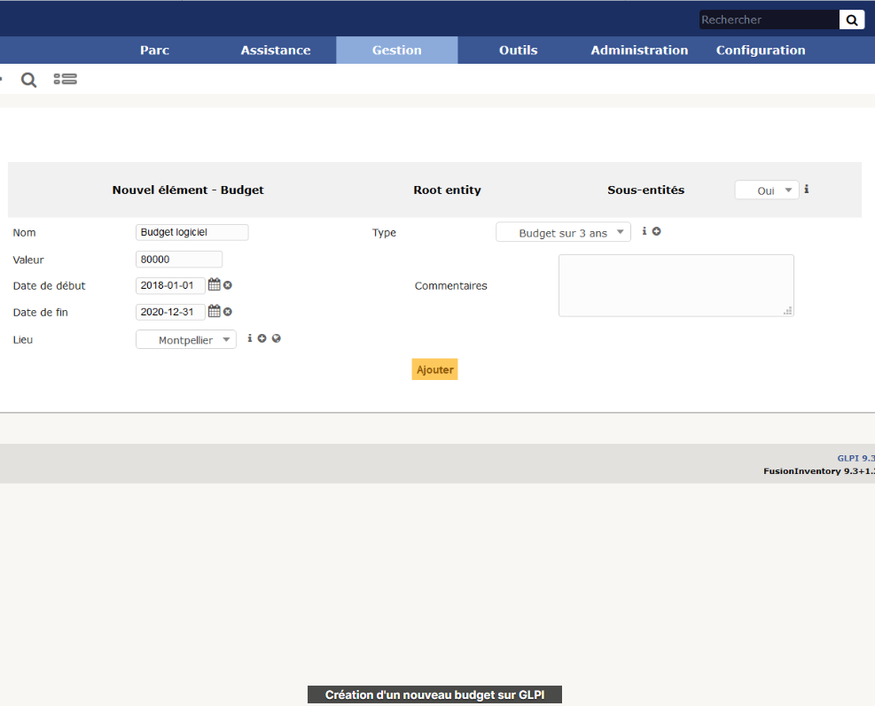